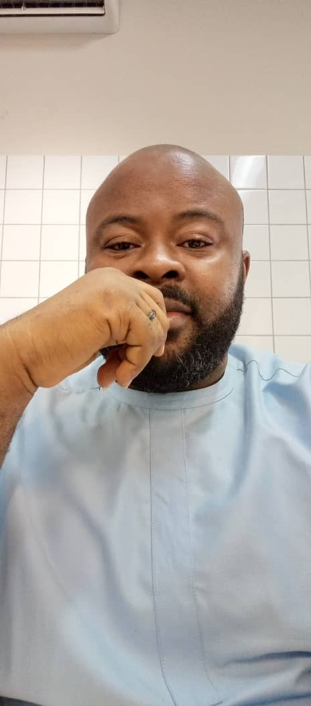

👋 Hi, I’m Vitalis Ugwumba — a passionate developer, problem solver, and lifelong learner. I love turning ideas into elegant, efficient code and creating digital experiences that make an impact. I currently reside in Yola town, Yola is the capital city of **Adamawa State**, located in northeastern **Nigeria**, along the **Benue River**. The town is divided into two main parts — **Jimeta**, which serves as the commercial center, and **Old Yola**, which houses the administrative and traditional institutions. Yola is known for its warm hospitality, rich Fulani culture, and historical significance as the seat of the **Lamido of Adamawa**. Surrounding Yola are several notable natural habitats and geographical features. The **Mandara Mountains**, a picturesque range extending along the Nigeria–Cameroon border, lie about **95–100 kilometers east of Yola**. Closer to the town, the **Song Valley**, located roughly **35 kilometers north of Yola**, provides scenic views and fertile land for agriculture. Additionally, the **Benue River**, which flows just south of Yola, contributes to the area’s lush vegetation and supports local fishing and farming communities.
